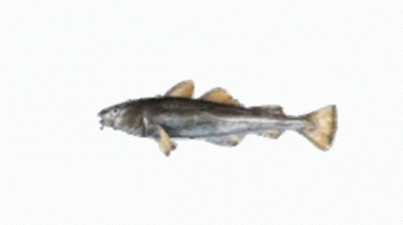

Well, I haven't done any collaborations yet so heres the placeholder pop effect.
Fish

But if for whatever reason you see this page and your thinking. Where's my damn collaborations? That doesn't count!
Don't worry I got you covered, because I have the most ground-breaking, boundary shattering collaboration around!
Yes Siree, and it's... My cat on the organ. You read that right, and now you're wondering 'are you serious?' Yes! Not only
can he carve furniture art but he can also 'play' the organ. Just watch!
And beautiful it was! We(I) decided to call it 'The Cat's Meow'. Why? I don't know, stupid pun oppurtunity I guess? You're welcome.